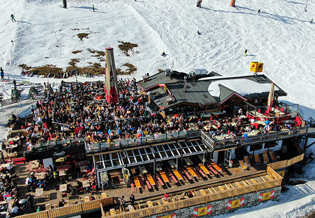
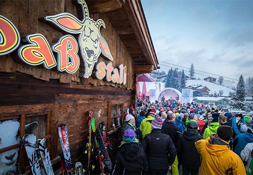
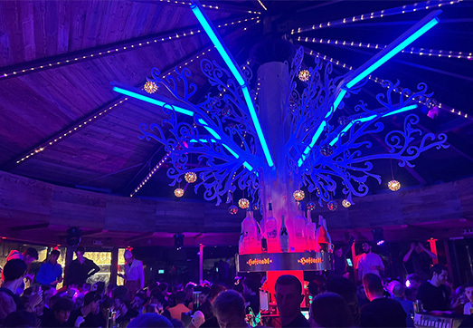

1. Zillertal Arena
Eén van de meest populaire skigebieden voor de après-ski is de Zillertal Arena. In de voorjaarsvakantie zie je hier heel veel Nederlanders lekker los gaan in de dorpen Gerlos, Zell am Ziller, Wald im Pinzgau en Königsleiten. Gerlos is bij de Nederlanders de beste après-ski in Oostenrijk. Natuurlijk heb je in de alle drie dorpen goede après-ski, maar in Gerlos heb je de meest uitbundige après-ski. Het feest begint hier al vroeg in de middag en verplaatsen de mensen zich van hut naar hut.

2. Skicircus Saalbach-Hinterglemm
Het Skicircus bestaat uit Saalbach, Hinterglemm, Leogang en Fieberbrunn. Als je de echte uitbundige après-ski wilt moet je echt in Saalbach en Hinterglemm zijn. Hier beginnen ze al vroeg te feesten en gaat het door tot in de nacht. Dit doe je in de GoaBstall, Maisalm en Bauers Schi-Alm.

Salzburger Sportwelt
Als een echte apres-ski liefhebber moet je zijn in de Salzburger Sportwelt en dan voornamelijk Flachau. In het dorp heb je genoeg tenten te vinden, maar de bekendste is de Hofstadl onderaan de laatste afdaling. Na een lange dag skiën kun je hier het dak eraf gaan feesten.
